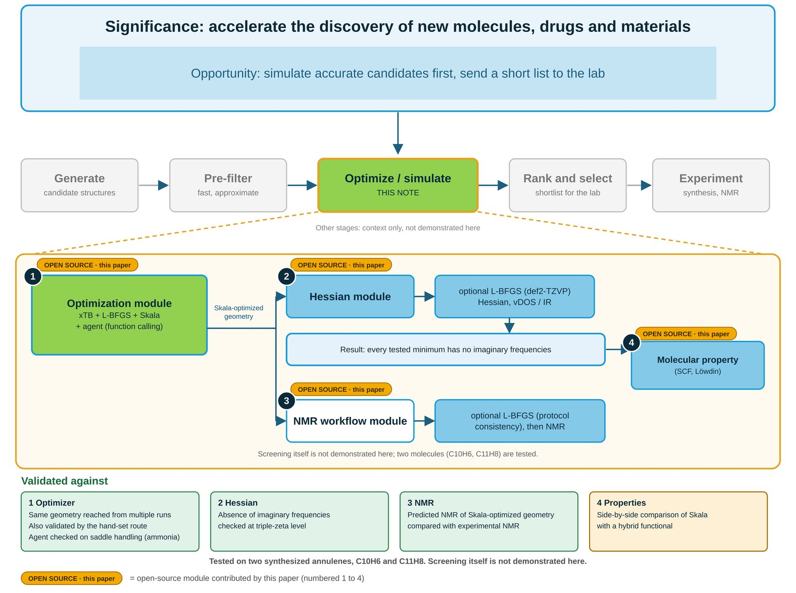

What the community could build with this code
The workflow is open source under the MIT licence so that others can run it, inspect it and extend it on their own molecules. This page sketches where it could go next. None of these directions has been tested here.


Where it fits: the screening pipeline
Finding a new drug or material means choosing among very many candidates. Simulation can narrow the list before anything is made in a lab. For that, each candidate has to be taken automatically from a rough structure to a checked, relaxed one. That middle stage is what this workflow does.
What the code gives you today
A supervised optimizer that coped with starts up to 6.4 eV above the final energy on this drug, and logs every step.
A full numerical Hessian that says whether the shape is a true minimum, with internal consistency checks.
Vibrational frequencies and infrared intensities that can be set against a measured spectrum.
A slot for an AI agent, plain rules, or both, behind a guard that bounds every change and can undo it.
Eight directions
High-throughput screening
Run the optimizer over a whole library of candidates instead of one molecule. Each candidate comes out relaxed, checked as a minimum, and with a full log, ready for ranking.
What it would take: a loop over input structures, a molecule profile per candidate (atom count, bond pattern), a gradient budget, and a queue of GPUs. Not yet tested on many molecules.
Infrared fingerprints for whole libraries
Compute a fingerprint for each candidate. A lab could then compare a measured spectrum with the predicted one to check what was actually made, or which form of a molecule is present.
What it would take: Module 2 on each relaxed structure. It needs 6N + 1 force calculations for N atoms (73 for this 12-atom drug), so cost grows with size. Harmonic limits apply.
Fair, side-by-side tests of methods
This work ran Skala-1.1 only and makes no accuracy ranking. The same harness could run other density functionals on the same starts and the same lab reference, so methods can be compared like for like.
What it would take: another calculator in place of the Skala one. The code already switches between two back ends (Skala-1.1 and a fast stand-in), which shows where a new one plugs in.
Research on AI agents in simulation
Here the agent's changes were all ones the built-in step calculator had proposed. Does an agent do better than plain rules on harder cases, such as flexible molecules or several competing shapes? The controller is swappable: language model, rules, a hybrid, or none.
What it would take: runs of the same starts with each controller, on molecules where the choices are harder. The logged prompts and answers in this release are an open record to study.
Bigger and more flexible molecules
5-fluorouracil is small and rigid. Most drugs are larger and floppier, with many possible shapes. Extending the test to them is the natural next step.
What it would take: more GPU time per molecule, a way to sample several starting shapes, and lab spectra to compare with.
Materials, not only drugs
The same chain, from rough structure to relaxed structure to vibrations, could apply to molecules for batteries, catalysts or electronics. The paper's other test molecules are annulenes, which are not drugs.
What it would take: starting structures and reference measurements for the new class of molecules.
Teaching and outreach
The saved forces let anyone rebuild the vibrations of a real drug on a laptop, draw the animations, and see how a spectrum arises, with no GPU.
What it would take: Python and the figure scripts in this release. See the Reproduce page, option B.
An open record of supervised runs
Every step, every force, every agent prompt and answer is published. Others can reuse these logs to test new monitoring rules or to train and evaluate controllers without rerunning the chemistry.
What it would take: nothing new: the files are in the data folder with checksums.
A sketch of a screening loop
In outline, a screening run would wrap the two modules in a loop. This is a sketch to show the idea. The function names are placeholders: in this release the steps are notebook cells, and the loop itself is not part of the released code.
for molecule in library: # rough structures from a fast tool
shape, log = optimize(molecule) # Module 1: supervised L-BFGS, Skala-1.1 forces
if not log.converged:
flag(molecule); continue
vib = hessian(shape) # Module 2: 6N + 1 force calculations
if vib.n_imaginary > 0:
flag(molecule); continue # not a true minimum
save(shape, vib.frequencies, vib.ir_intensities, log)What one molecule cost here
- Module 1: 4, 13 and 14 minutes of optimization for the three starts (23, 64 and 72 gradient evaluations) on one NVIDIA L4 cloud GPU, in the smaller basis set.
- Module 2: an 11-minute re-optimization in the larger basis set, then 73 force calculations for the Hessian.
- So for this 12-atom drug, going from one bent start to an infrared fingerprint took roughly an hour of cloud-GPU notebook time. This is our estimate: the Hessian stage was not timed separately in the saved logs.
These are facts about these runs, not a speed comparison. Cost rises with the number of atoms and electrons.
How to start on your own molecule
- Check that the release works for you. Run the two-minute check on the Reproduce page, then the figure scripts.
- Rerun the drug. Run the Module 1 and Module 2 notebooks unchanged on a cloud GPU, so you know your set-up gives the published numbers.
- Swap in your molecule. Replace the starting structure and the short molecule description given to the agent, and set a gradient budget. Keep the guard and the same-structure check.
- Find a measurement to compare with. A result is only as convincing as its reference. Isolated-molecule spectra (gas phase or cold matrix) are the fairest match for this kind of calculation.
- Share what you find. The code is MIT licensed: fork it, change it, and publish your logs the same way.
What has to be shown first
Honest gaps between this test and real screening.
- One drug molecule was tested. High-throughput screening itself is outside the scope of this work.
- The bent starts were made on purpose. They mimic rough screening shapes but do not come from a real screening pipeline.
- Larger, flexible, charged or metal-containing molecules have not been tried.
- No other method was run on this drug, so there is no accuracy ranking.
- The AI agent has not been shown to make runs faster than plain rules.
- Skala-1.1 is described in a preprint (arXiv:2506.14665, version 6) that has not been peer reviewed. The functional, its weights and its licence belong to its developers.